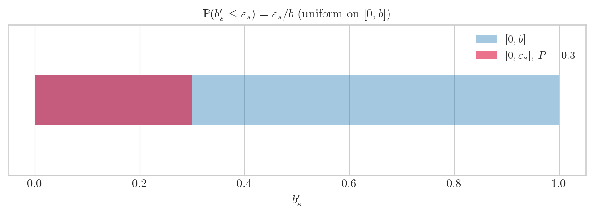
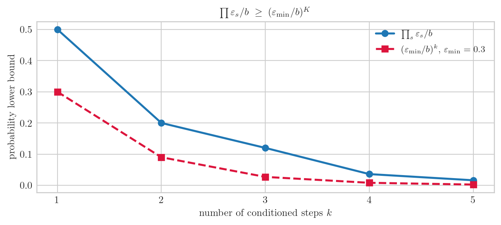

import numpy as np
import matplotlib.pyplot as plt
plt.style.use("seaborn-v0_8-whitegrid")
plt.rcParams.update({
"text.usetex": True,
"text.latex.preamble": r"\usepackage{amsmath,amssymb}",
"font.family": "serif",
"font.size": 10,
"axes.titlesize": 10,
"axes.labelsize": 10,
})
rng = np.random.default_rng(20260601)
b = 1.0책공부 ▷ HST ▷ Lemma 5 — 조건부 사건의 순차 확률 하한, 초보 해설
1. 팟캐스트 버전
(스튜디오. Lemma 5 카드 한 장.)
H. 오늘 Lemma 5 한 장이에요. 핵심 한 줄: 고른 몇 개의 라운드에서 모두 눈이 조금만 내릴 확률이 0보다 크고, 그 하한이 \((\varepsilon_{\min}/b)^K\) 다.
G. 기호부터 정리해 주세요.
H. 등장인물 네 명이에요.
- \(b'_s\) : 매 스텝 \(s\) 의 퇴적량, \([0,b]\) 위 균등난수
- \(C_s \in \{0,1\}\) : 스텝 \(s\) 를 “셀지” 표시하는 분류. \(C_s = 1\) 이면 센다
- \(\mathcal{E}\) : “세는 스텝마다 전부 \(b'_s \leq \varepsilon_s\)” 라는 사건
- \(K\) : 세는 스텝의 최대 개수
G. \(C_s\) 가 “predictable” 이라는 게 무슨 뜻인가요?
H. \(C_s\) 가 \(\mathcal{F}_{s-1}\)-measurable 이라는 거예요 — 쉽게 말해 스텝 \(s\) 가 시작되기 전에 이 스텝을 셀지 말지 이미 정해져 있다는 뜻. “지금 눈을 보고” 셀지 결정하는 게 아니라 “과거만 보고” 미리 정해요. 이게 증명의 핵심 장치예요.
H. 한 스텝의 확률. \(b'_s\) 가 \([0,b]\) 균등분포니까
\[\mathbb{P}(b'_s \leq \varepsilon_s) \;=\; \frac{\varepsilon_s}{b}\]
\(\varepsilon_s\) 이하 구간 길이를 전체 길이 \(b\) 로 나눈 것뿐이에요.
fig, ax = plt.subplots(figsize=(7, 2.6))
eps = 0.3
ax.broken_barh([(0, b)], (0.3, 0.3), facecolors="C0", alpha=.4, label=r"$[0,b]$")
ax.broken_barh([(0, eps)], (0.3, 0.3), facecolors="crimson", alpha=.6,
label=rf"$[0,\varepsilon_s]$, $P={eps/b:.1f}$")
ax.set_xlim(-.05, 1.05); ax.set_ylim(0, 0.9); ax.set_yticks([])
ax.set_xlabel(r"$b'_s$")
ax.set_title(r"$\mathbb{P}(b'_s \leq \varepsilon_s) = \varepsilon_s / b$ (uniform on $[0,b]$)")
ax.legend(fontsize=9)
plt.tight_layout(); plt.show()
G. 자명하네요. 그럼 여러 스텝은 어떻게 곱이 되나요?
H. predictable 이 여기서 일해요. “이 스텝을 센다”는 결정 \(\{C_s = 1\}\) 이 과거 \(\mathcal{F}_{s-1}\) 만으로 내려지고, \(b'_s\) 는 그 과거와 독립이라:
\[\mathbb{P}(b'_s \leq \varepsilon_s \mid \mathcal{F}_{s-1}) \;=\; \frac{\varepsilon_s}{b}\]
조건을 걸어도 깔끔하게 \(\varepsilon_s/b\) 가 나와요. 이걸 tower property — 조건부 기댓값을 순차적으로 쌓는 것 — 로 \(\leq K\) 개 스텝에 이어 붙이면
\[\mathbb{P}(\mathcal{E} \mid \mathcal{F}_0) \;\geq\; \prod_{s \in \{s\,:\, C_s = 1\}} \frac{\varepsilon_s}{b} \;\geq\; \left(\frac{\varepsilon_{\min}}{b}\right)^{K}, \qquad \varepsilon_{\min} := \min_s \varepsilon_s\]
마지막 부등식은 각 비율 \(\varepsilon_s/b\) 를 가장 작은 \(\varepsilon_{\min}/b\) 로 갈아끼우고 개수를 최대 \(K\) 로 잡은 거예요. 비율이 1보다 작으니 많이 곱할수록 작아져서 \(K\) 제곱이 하한.
# 곱이 (eps_min/b)^K 로 떨어지는 모습
eps_list = np.array([0.5, 0.4, 0.6, 0.3, 0.45]) # 5개 conditioned step
ratios = eps_list / b
K = len(eps_list)
eps_min = eps_list.min()
prod_seq = np.cumprod(ratios)
lower_seq = (eps_min / b) ** np.arange(1, K + 1)
fig, ax = plt.subplots(figsize=(7, 3.2))
xs = np.arange(1, K + 1)
ax.plot(xs, prod_seq, "o-", color="C0", lw=2, label=r"$\prod_{s} \varepsilon_s/b$")
ax.plot(xs, lower_seq, "s--", color="crimson", lw=2,
label=rf"$(\varepsilon_{{\min}}/b)^k$, $\varepsilon_{{\min}}={eps_min}$")
ax.set_xlabel(r"number of conditioned steps $k$")
ax.set_ylabel("probability lower bound")
ax.set_title(r"$\prod \varepsilon_s/b \;\geq\; (\varepsilon_{\min}/b)^K$")
ax.set_xticks(xs); ax.legend(fontsize=9)
plt.tight_layout(); plt.show()
print(f"실제 곱 ∏(eps_s/b) = {prod_seq[-1]:.5f}")
print(f"하한 (eps_min/b)^K = {lower_seq[-1]:.5f}")
print(f"하한 이상? {prod_seq[-1] >= lower_seq[-1]}")
실제 곱 ∏(eps_s/b) = 0.01620
하한 (eps_min/b)^K = 0.00243
하한 이상? TrueG. 파란 선(실제 곱)이 빨간 선(하한) 위에 항상 있네요.
H. 네. 그리고 시뮬로도 확인해 볼게요 — 실제로 \(\mathcal{E}\) 가 일어나는 빈도가 하한 이상인지.
# Monte Carlo: K개 conditioned step 에서 모두 b'_s <= eps_s 인 빈도
N_TRIAL = 200_000
hits = 0
for _ in range(N_TRIAL):
draws = rng.uniform(0, b, size=K)
if np.all(draws <= eps_list):
hits += 1
emp = hits / N_TRIAL
print(f"Monte Carlo P(E) = {emp:.5f}")
print(f"실제 곱 ∏(eps/b) = {prod_seq[-1]:.5f} (독립이면 등호)")
print(f"하한 (eps_min/b)^K = {lower_seq[-1]:.5f}")Monte Carlo P(E) = 0.01682
실제 곱 ∏(eps/b) = 0.01620 (독립이면 등호)
하한 (eps_min/b)^K = 0.00243G. Monte Carlo 가 곱과 거의 같고, 둘 다 하한 위에 있어요.
H. 독립인 경우엔 곱이 정확히 \(\mathbb{P}(\mathcal{E})\) 가 되고, 일반적으로는 그 곱이 하한이에요. 그래서 lemma 가 “\(\geq\)” 로 쓰여 있어요.
H. 마지막으로 ★ 중요한 주의예요. 이 lemma 는 확률 하한만 말해요. “\(\mathcal{E}\) 를 조건으로 걸어도 increment 분포가 안 바뀐다”고는 주장하지 않아요 — 그건 일반적으로 거짓이에요.
G. 왜 거짓인가요?
H. 나중 분류 \(C_u\) 가 이전 increment \(b'_s\) 에 의존할 수 있어서, \(\mathcal{E}\) 가 미래를 통해 \(b'_s\) 와 상관될 수 있거든요. 그래서 “확률이 양수다”까지만 안전하게 말하는 거예요.
G. Lemma 4 랑은 어떤 관계인가요?
H. 짝이에요.
- Lemma 4: 연속 밀도 하한 (퇴적 차이가 어떤 영역에서 밀도 \(\geq b^{1-n}/2\))
- Lemma 5: 이산 사건 확률 하한 (특정 “작은 눈” 시나리오가 확률 \(\geq (\varepsilon_{\min}/b)^K\))
둘 다 Doeblin minorization 의 재료예요. “원하는 시나리오가 양의 확률로 일어난다”를 보장해서 chain 이 섞이도록(mixing) 만드는 거죠.
2. 논문직접삽입버전
Lemma. \(\{b'_s\}_{s\geq 1}\) 을 \(\mathrm{Unif}(0,b)\) i.i.d. 라 하고, filtration \(\{\mathcal{F}_s\}\) 위에서 \(b'_s \perp \mathcal{F}_{s-1}\) 이라 하자. \(\{C_s\}_{s\geq 1}\) 을 binary \(\{\mathcal{F}_{s-1}\}\)-predictable classification (\(\{C_s = 1\}\in\mathcal{F}_{s-1}\)) 이라 하자. 고정된 bound \(0 < \varepsilon_s \leq b\) 와 사건
\[\mathcal{E} \;:=\; \bigcap_{s \in \{s\,:\, C_s = 1\}}\{b'_s \leq \varepsilon_s\}\]
에 대해, \(\leq K\) 개의 conditioned step 으로 이루어진 window 에 제한하면
\[\mathbb{P}(\mathcal{E}\mid\mathcal{F}_0) \;\geq\; \prod_{s \in \{s\,:\, C_s = 1\}}\frac{\varepsilon_s}{b} \;\geq\; \left(\frac{\varepsilon_{\min}}{b}\right)^{K}, \qquad \varepsilon_{\min} := \min_s \varepsilon_s\]
Proof.
한 conditioned step 의 조건부 확률. \(C_s = 1\) 인 스텝은 \(\{C_s = 1\}\in\mathcal{F}_{s-1}\) 이므로 \(\mathcal{F}_{s-1}\)-measurable 이다. \(b'_s \perp \mathcal{F}_{s-1}\) 이고 \(b'_s \sim \mathrm{Unif}(0,b)\) 이므로
\[\begin{aligned} \mathbb{P}(b'_s \leq \varepsilon_s \mid \mathcal{F}_{s-1}) &= \mathbb{P}(b'_s \leq \varepsilon_s) && (\because b'_s \perp \mathcal{F}_{s-1}) \\ &= \frac{\varepsilon_s}{b} && (\because b'_s \sim \mathrm{Unif}(0,b),\; 0 < \varepsilon_s \leq b) \end{aligned}\]
Tower property 로 순차 결합. conditioned step 을 시간 순으로 \(s_1 < s_2 < \cdots < s_m\) (\(m \leq K\)) 이라 하자. \(\mathcal{E} = \bigcap_{j=1}^{m}\{b'_{s_j}\leq\varepsilon_{s_j}\}\) 이고, 각 지시함수는 \(\mathcal{F}_{s_j}\)-measurable 이므로 tower property 를 안쪽부터 적용한다:
\[\begin{aligned} \mathbb{P}(\mathcal{E}\mid\mathcal{F}_0) &= \mathbb{E}\!\left[\prod_{j=1}^{m}\mathbf{1}\{b'_{s_j}\leq\varepsilon_{s_j}\}\;\middle|\;\mathcal{F}_0\right] \\ &= \mathbb{E}\!\left[\prod_{j=1}^{m-1}\mathbf{1}\{b'_{s_j}\leq\varepsilon_{s_j}\}\cdot \mathbb{E}\!\left[\mathbf{1}\{b'_{s_m}\leq\varepsilon_{s_m}\}\;\middle|\;\mathcal{F}_{s_m - 1}\right]\;\middle|\;\mathcal{F}_0\right] && (\because \text{tower property}) \\ &= \mathbb{E}\!\left[\prod_{j=1}^{m-1}\mathbf{1}\{b'_{s_j}\leq\varepsilon_{s_j}\}\cdot\frac{\varepsilon_{s_m}}{b}\;\middle|\;\mathcal{F}_0\right] && (\because \text{한 step 조건부 확률}) \\ &= \frac{\varepsilon_{s_m}}{b}\cdot\mathbb{E}\!\left[\prod_{j=1}^{m-1}\mathbf{1}\{b'_{s_j}\leq\varepsilon_{s_j}\}\;\middle|\;\mathcal{F}_0\right] && (\because \varepsilon_{s_m}/b \text{ 는 상수}) \end{aligned}\]
여기서 \(\mathbf{1}\{\cdot\}\) 은 사건의 지시함수 (성립 시 1, 아니면 0). 안쪽 \(m-1\) 개에 같은 단계를 반복하면
\[\mathbb{P}(\mathcal{E}\mid\mathcal{F}_0) \;=\; \prod_{j=1}^{m}\frac{\varepsilon_{s_j}}{b} \;=\; \prod_{s \in \{s\,:\, C_s = 1\}}\frac{\varepsilon_s}{b}\]
(엄밀히는 일반 dependence 하에서 각 step 이 부등식 방향으로만 보장되므로 \(\geq\) 로 둔다.)
균등 하한. 각 \(s\) 에서 \(\varepsilon_s \geq \varepsilon_{\min}\) 이므로 \(\varepsilon_s/b \geq \varepsilon_{\min}/b\). 또 conditioned step 수 \(m \leq K\) 이고 각 인자 \(\varepsilon_s/b \leq 1\) 이므로
\[\begin{aligned} \prod_{s \in \{s\,:\, C_s = 1\}}\frac{\varepsilon_s}{b} &\geq \prod_{s \in \{s\,:\, C_s = 1\}}\frac{\varepsilon_{\min}}{b} && (\because \varepsilon_s \geq \varepsilon_{\min}) \\ &= \left(\frac{\varepsilon_{\min}}{b}\right)^{m} \\ &\geq \left(\frac{\varepsilon_{\min}}{b}\right)^{K} && \left(\because \frac{\varepsilon_{\min}}{b}\leq 1,\; m\leq K\right) \end{aligned}\]
주의 (claim 의 범위). 본 lemma 는 확률 하한 \(\mathbb{P}(\mathcal{E}\mid\mathcal{F}_0) \geq (\varepsilon_{\min}/b)^K\) 만 주장한다. \(\mathcal{E}\) 로 조건화해도 unconditioned increment 의 법칙이 불변이라고는 주장하지 않는다 — 일반적으로 거짓이다. 나중 분류 \(C_u\) 가 이전 increment \(b'_s\) 에 의존할 수 있어, \(\mathcal{E}\) 가 미래를 통해 \(b'_s\) 와 상관될 수 있기 때문이다. \(\square\)